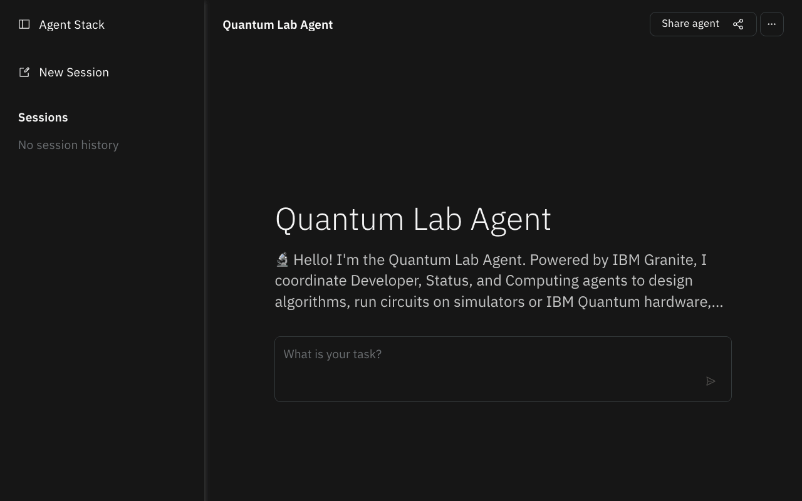

Habla en ideas.
Recibe circuitos.
Genera OpenQASM y código Qiskit para Bell, Grover, Deutsch–Jozsa y más.
Tu próximo salto cuántico
empieza con una conversación.
Genera código, explora procesadores y ejecuta circuitos en IBM Quantum. Cinco agentes, un solo laboratorio.
Entra al laboratorio CONSTRUIDO PARA EXPLORAR. ABIERTO PARA TODOS.
Deja que cada agente haga lo suyo.
Quantum Lab coordina el
flujo, conecta las respuestas y te devuelve el siguiente paso.
Entiende tu solicitud y coordina a los agentes especializados mediante A2A. Código, backend y resultados vuelven a ti en una sola respuesta.
Explorar el agenteDesde tu primer estado de Bell hasta experimentos híbridos. Un flujo para cada pregunta.
Genera OpenQASM y código Qiskit para Bell, Grover, Deutsch–Jozsa y más.
Prueba en simuladores locales o ejecuta en el hardware IBM Quantum disponible para tu cuenta.
Consulta colas y jobs. Explora topologías, circuitos y mediciones en Canvas interactivos.
Una mirada al sistema en Agent Stack.
Estas demos muestran
flujos reales del proyecto.

De un prompt a un circuito de Grover: generación, ejecución coordinada y visualización de resultados.
Ver los detalles
Abre tu terminal. Pon los agentes en marcha.
Haz tu primera
pregunta cuántica.
# 01 — Prepara tu laboratorio
git clone https://github.com/BrUn3y/quantum_lab_agent.git
cd quantum_lab_agent
uv sync
ollama pull granite4.2:8b
# 02 — Configura tu token IBM Quantum
cp .env.example .env
# Edita QISKIT_IBM_TOKEN en .env
# 03 — Inicia los cinco agentes
./start_all.shCreate a Bell state, execute it on the local simulator with 1024 shots, and explain the results